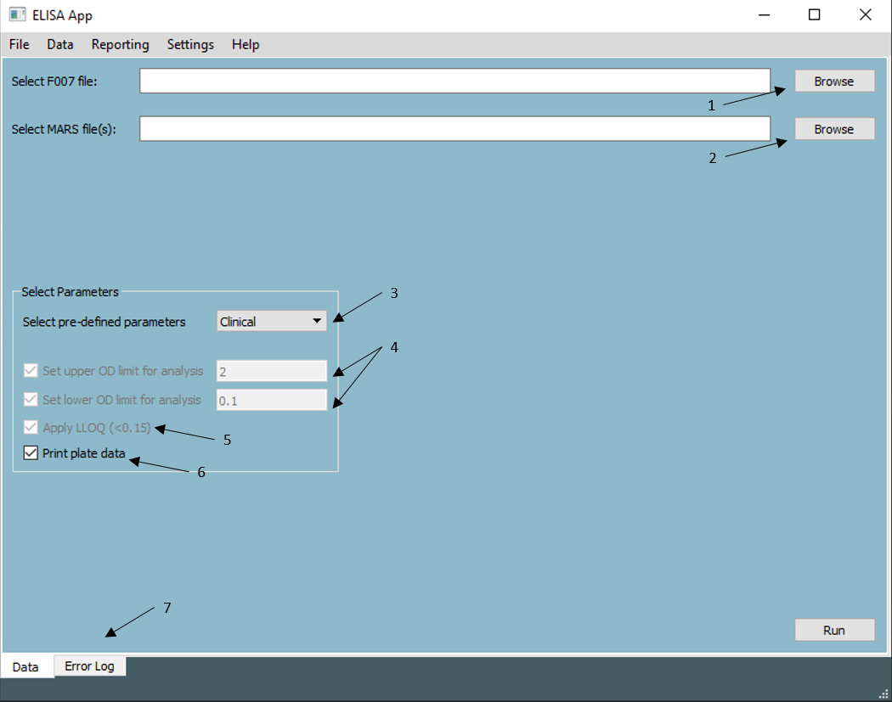
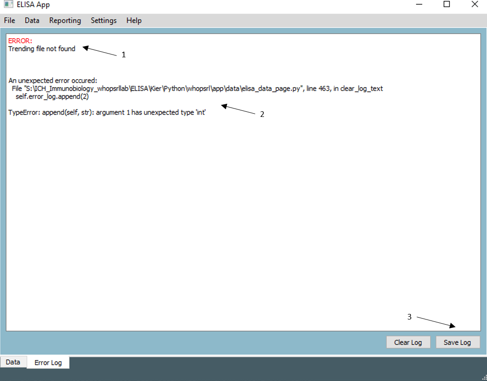
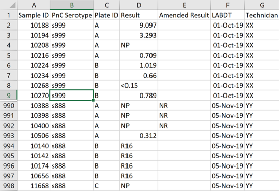

Data Menu
ELISA Data Processing
ELISA plate data may be processed from this page. For the data to be processed, a F007 file and raw data files are required. F007 contains the testing details. The raw data files are expected to be exported from Omega MARS software with the ICH template applied. If any of the expected files are missing or if the files do not contain all the required information, the operation will either stop or ignore that file.
Data Tab
The main Data Tab provides options to select the relevant assay files and choose whether to apply common parameters such as LLOQ and OD limits.

- Browse to find relevant F007
- Browse to find and select raw MARS files
- Select from a list of presets (Clinical/Validation/Custom)
- For the validated (Clinical) ELISA assay, the OD limits and LLOQ will be disabled as these must be kept.
- For assay validation, the upper OD limit will be applied and disabled for editing. LLOQ and the lower OD limit of 0.1 will be available for editing but will default to being 'off'
- There is a custom option from the dropdown where everything is enabled for editing
- Type in an upper and/or lower OD limit. Uncheck the checkboxes to remove either or both OD limits.
- Applying LLOQ will assign an arbritrary "<0.15" value to those samples below the LLOQ. Removing this function will treat the sample like any other.
- Select to print the data table for each plate
- Change between tabs (Data/Error)
Error Tab
This tab contains an error logger which will display a list of errors that may occur during execution. Some errors will be explicitly handled, while others may not. The image below illustrates this:

Error 1 has been handled within the code, and a simple error message is presented. In this case, the trending file cannot be found. The file path to the trending file should be checked in the file paths settings page
Error 2 has not been handled from within the code. Instead, the exception raised from within Python is re-routed to the error log and displayed here. The error may not be as intuitive. In this case, an error was forced by trying to append a number to the text box.
In the case of an unhandled exception where it is not clear how to proceed, the error log may be saved (3) as a text file.
Output Data Files
There are a number of output files produced/updated during ELISA data processing. There are two main save locations for these files:
- Assay Directory (where plate data are stored)
- Study Master Directory (where all master files are stored)
Run details (assay directory)
This table contains information about the assay:
- Master file study path
- Assay details (date, technician study...)
- Number of plates run and number failed
- Any warnings for particular plates/samples
- Plate and sample details
F093 (assay directory)
F093 is a summary table of results saved as a .xlsm file. Two tables are included. The first table is protected and the second table is for editing. This is to allow for a comparison between the original and altered results (typically due to high/low/missing values)
F093 json file (assay directory)
If plates are processed in batches or the same plate is processed multiple times, the F093 will need to be updated automatically to reflect the new results. This is done through the use of this .json file. It keeps track of new and existing data and is used to update F093 accordingly.
Master Study File (study master directory)
This csv file contains a result for every single sample tested throughout a study (that has been processed using the application). This can be used for throughput summaries, cross-referencing and quick data-lookups. Primarily it will be compared to the results obtained from manual input before sending results to sponsors. The layout of the file is self explanatory but it is worth mentioning the amended result column. The results that will appear in this column will either indicate high or low sample results that cannot be calculated or 'NR' == 'No Result'. This will appear if the same sample has previously been tested against the same serotype and returned an 'NP' == 'Non Parallel' on both occasions.

Trending File (directory specified in settings)
This csv file contains the QC results obtained from each plate processed using the application. Trending results prior to this have been re-formatted and included in this file.
Reporting Menu
Gantt Chart
A Gantt chart can be produced to help keep track of projects. For this to be possible, the application needs a list of projects with the following column names:
- sponsor required
- study required
- shipment (shipment number) required
- start (Day expected to start testing) required
- end (Day expected to finish testing) required
- n (Number of samples) required
- pn (Number of serotypes) optional
- total (Total number of results) optional
- Tested (Number of results obtained) optional
- perc_com (Percentage complete) required
- deadline (Add a deadline to Gantt chart) optional
The following options are available on the page:
- Start/End date - select a date range to display (x-axis)
- Plot button - plot the chart
- Save button - save the plot to .png
Settings Menu
File Paths
There are a number of files and directories required for the application to run. As some of these files may need to be edited in the future, they are not included as resources within the application itself, rather, the file paths need to be specified for reading/writing. Any error that may occur during execution where the error log reports that a file was not found may be solved by checking and editing the file paths on this page.